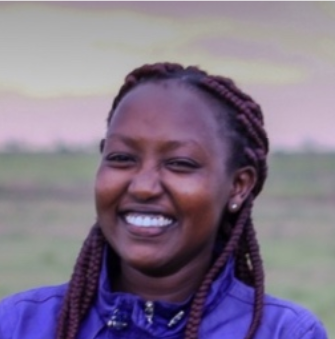

Let’s know each other
Felipe Melo

Felipe Melo’s research is guided by the following question: How to manage and restore social-ecological landscapes? To answer this question, he drew on both the theoretical and analytical tools of natural sciences and on the social-ecological systems (SES) framework. More info HERE
Raihana Ferdous

Raihana’s research is concerned with the development of sustainable energy and technology and in their shaping of the human and more than human worlds. Raihana has an extensive background in both Human Geography and Social Anthropology and has worked with various inter and multi-disciplinary teams. More info HERE
Purity Gacheri

Purity Gacheri Limbua is the current Dean of the School of Pure and Applied Sciences at Mount Kenya University. She was the Head of Department of Biological Sciences (Now renamed as Natural Sciences), a position which she held for 8 years (2013 – 2021). She is a Lecturer and a researcher who has successfully supervised many postgraduate students. More info HERE
Víctor Arroyo Rodríguez

Víctor’s research focuses on understanding the factors that determine the maintenance of biodiversity in fragmented tropical landscapes, and is aimed at generating knowledge and theories that serve as a basis for designing species conservation strategies in these landscapes. To do this, he carries out studies at various spatial scales in different Neotropical landscapes. More info HERE
Madelon Lohbeck
Madelon is an Assistant Professor at the Wegeningen University and her research interest are functional ecology and land restoration. More info HERE
Nivaldo Peroni (Wont’t make it, unfortunately)

Focuses on the study of socio-ecological systems, particularly the processes and anthropogenic factors that influence the conservation, loss, and amplification of biodiversity and agrobiodiversity. This includes a focus on approaches in historical ecology, plant and landscape domestication, biodiversity conservation and use, plant ecology, and ethnoecology. More Info HERE
Rodrigo Carmo

Associate Professor in the Department of Biology, specializing in Ecology at the Federal Rural University of Pernambuco (UFRPE), conducting research affiliated with the Laboratory of Ecological Synthesis and Biodiversity Conservation - ECOFUN. Research interests include Political Ecology, Ecosystem Ecology, and Numerical Ecology, with a specific focus on understanding how changes in land use and cover, as well as climate change, alter the relationship between society and nature. Furthermore, they are an enthusiast of scientific outreach and communication. More Info HERE
Marcello di Bonito

Marcello is an active researcher with a multidisciplinary approach, but with particular interests in soil conservation and its sustainable management, the relationship between natural resources, their ecosystem functions, and their modelling and understanding, especially through GIS and remote sensing. He currently focuses his research on ecological restoration issues, the role of soil in the restoration of ecosystems and the use of remote sensors and analysis. More info HERE
Stewart Thompson

Stweart has a lifelong passion for wildlife conservation and education. I have worked extensively in these areas in a variety of geographic locations throughout my 31 years as an academic, As a consequence I have been incredibly lucky to work in some amazing wildlife locations, taking time wherever possible to go birding. More info HERE
Antonio Uzal

Anonio Uzal’s current research areas of interest include Impacts of human disturbance on wildlife, conservation and management of game species, carnivores and endangered species, spatial ecology landscape ecology, remote sensing, relationship plant-herbivores, animal behavior, population dynamics, telemetry, remote sensing, ecosystem services. More info HERE
Peter Njenga

Prof. Njenga is a professor at Jomo Kenyatta University of Agriculture and Technology and experiences span academia, research, project management, policy development and community outreach. He has supervised several postgraduate students in his area of expertise. He is a trained Biology practicals Examiner with Kenya National Examinations Council (KNEC). He has authored several books and publications in diverse areas of applied Biology. More info HERE
David Kinanta

Senior Programmes Officer, Natural Resource Management of the Maasai Mara Wildlife Conservancy. More info HERE
Lukelysia Mwagi

She is a quality-oriented professional with over 10 years’ experience and expertise in sample handling and collection, data analysis, procurement, report writing, and management. Self-motivated individual with proven ability to work well both independently and within a team. More info HERE
Ilyas Siddique

Ilyas Siddique is Professor of Agroecosystems and currently heads the Applied Ecology Lab in the Department of Crop Science of the Federal University of Santa Catarina, Brazil. Ilyas teaches undergraduate and postgraduate courses in agroecology, agroforestry, syntropic agriculture, weed ecology, research synthesis, epistemology, scientific methods and communication. More Info HERE
Jedidah Nankaya

My research interest is in ethnobiology where I study plant- human interactions in a changing world and how this informs conservation of biodiversity and sustainable use of natural resources. I use ethnoecological approach to investigate how local people use their ecological knowledge to understand their environment. More info HERE
Harrison Leshao Nabaala

Very enthusiastic to learn new things and takes own initiatives to share with other people. Aspires to work in an environment with the possibility to learn and develop new skills, not only myself but also to support others by sharing knowledge.
More info HERE
Christine Magaju

Resilient productivity and profitability of agricultural systems with trees. Specifically, On-farm land restoration, Sustainable Agricultural Intensification, ecosystem health surveillance More info HERE
Jane Naitareu Soit

Jane is a young Maasai women and a passionate environmentalist. Having been born and raised in the world famous Maasai Mara, which holds about 25% of Kenya’s total biodiversity, Jane grew up with a deep appreciation of nature, and a strong connection to the environment. More info HERE